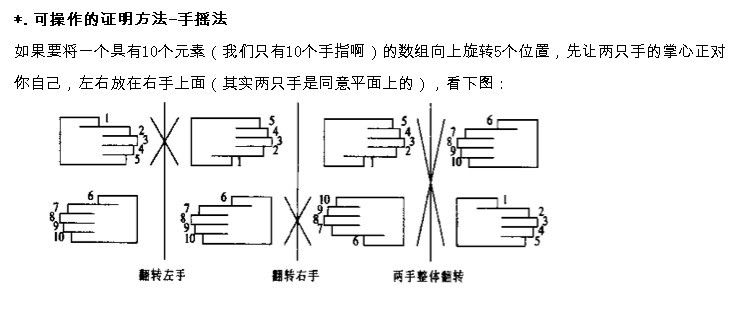

1.1 旋转字符串
题目描述
给定一个字符串，要求把字符串前面的若干个字符移动到字符串的尾部，如把字符串“abcdef”前面的2个字符’a’和’b’移动到字符串的尾部，使得原字符串变成字符串“cdefab”。请写一个函数完成此功能，要求对长度为n的字符串操作的时间复杂度为 O(n)，空间复杂度为 O(1)。
分析与解法
解法一：暴力移位法
初看此题，可能最先想到的方法是按照题目所要求的，把需要移动的字符一个一个地移动到字符串的尾部，如此我们可以实现一个函数LeftShiftOne(char* s, int n) ，以完成移动一个字符到字符串尾部的功能，代码如下所示：
|
|
因此，若要把字符串开头的m个字符移动到字符串的尾部，则可以如下操作：
|
|
下面，我们来分析一下这种方法的时间复杂度和空间复杂度。
针对长度为n的字符串来说，假设需要移动m个字符到字符串的尾部，那么总共需要 mn 次操作，同时设立一个变量保存第一个字符，如此，时间复杂度为O(m n)，空间复杂度为O(1)，空间复杂度符合题目要求，但时间复杂度不符合，所以，我们得需要寻找其他更好的办法来降低时间复杂度。
解法二：三步反转法
对于这个问题，换一个角度思考一下。
将一个字符串分成X和Y两个部分，在每部分字符串上定义反转操作，如X^T，即把X的所有字符反转（如，X=”abc”，那么X^T=”cba”），那么就得到下面的结论：(X^TY^T)^T=YX，显然就解决了字符串的反转问题。
例如，字符串 abcdef ，若要让def翻转到abc的前头，只要按照下述3个步骤操作即可：
- 首先将原字符串分为两个部分，即X:abc，Y:def；
- 将X反转，X->X^T，即得：abc->cba；将Y反转，Y->Y^T，即得：def->fed。
- 反转上述步骤得到的结果字符串X^TY^T，即反转字符串cbafed的两部分（cba和fed）给予反转，cbafed得到defabc，形式化表示为(X^TY^T)^T=YX，这就实现了整个反转。
如下图所示：

代码则可以这么写：
|
|
这就是把字符串分为两个部分，先各自反转再整体反转的方法，时间复杂度为O(n)，空间复杂度为O(1)，达到了题目的要求。
举一反三
1、链表翻转。给出一个链表和一个数k，比如，链表为1→2→3→4→5→6，k=2，则翻转后2→1→6→5→4→3，若k=3，翻转后3→2→1→6→5→4，若k=4，翻转后4→3→2→1→6→5，用程序实现。
2、编写程序，在原字符串中把字符串尾部的m个字符移动到字符串的头部，要求：长度为n的字符串操作时间复杂度为O(n)，空间复杂度为O(1)。
例如，原字符串为”Ilovebaofeng”，m=7，输出结果为：”baofengIlove”。
3、单词翻转。输入一个英文句子，翻转句子中单词的顺序，但单词内字符的顺序不变，句子中单词以空格符隔开。为简单起见，标点符号和普通字母一样处理。例如，输入“I am a student.”，则输出“student. a am I”。